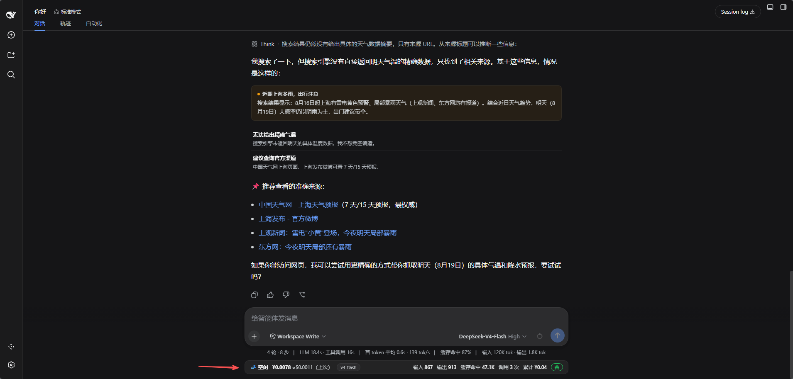

真实用量，实时呈现
读取 DSH usage 事件中的输入、输出、缓存命中与缓存写入 token，在输入框旁看清用量构成。
USAGE → ESTIMATEMADE FOR DEEPSEEK HARNESS
让 Agent 放手工作，让开销一目了然。真实 token 用量、实时费用估算，就在输入框旁，安静地为你记好每一笔。
开源免费 · 本地运行 · 无需构建
这一次任务，心中有数
¥0.2634
为专注而生的轻量搭档。
01 / IN YOUR WORKFLOW
一个安静的横条，装下所有关键数字。
不用切换面板，也不打断思路。

截图来自早期配置实例，展示的价格与累计仅为示例；实际估算以你的本地设置为准。
02 / SMALL, BY DESIGN
从第一个 token 到整段会话，
每一笔都有迹可循。
读取 DSH usage 事件中的输入、输出、缓存命中与缓存写入 token，在输入框旁看清用量构成。
USAGE → ESTIMATE编辑模型单价、添加自定义模型、配置峰谷时段，随时通过 JSON 导入和导出备份设置。
CONFIGURABLE PRICING子代理用量汇总到根会话当前轮次；启动时回放持久会话事件，重建历史累计。
SUBAGENTS + SESSION REPLAY03 / LET’S GET STARTED
复制提示词，粘贴到 DSH 对话中，剩下的交给你的 Agent。
请从 https://github.com/chenzhiyong1994/dsh-cost-guard 安装动态 Cordis 插件 dsh-cost-guard。 读取仓库中的 docs/install.md 并按“在线安装”执行。 运行前必须使用 cordis_inspect_self 确认 hasHostHalf 与 hasClientHalf 都为 true， 然后激活插件并告诉我安装后的插件 ID。
需要支持动态 Cordis 工具的 DeepSeek Harness 和 DSH Web UI。已在 DSH 0.1.0-rc.6 验证。
04 / GOOD TO KNOW
Token 数来自 DSH usage 事件；金额根据你配置的单价和峰谷规则在本地估算。它不是权威账单，请始终以供应商实际账单为准。
Cost Guard 只观察用量并展示估算，不含预测门禁、确认遮罩或模型路由，不拦截或改写 Agent 执行。
可以。在「设置 → 开销监控」中添加自定义模型并填写单价。用量统计取决于 DSH 为对应模型记录的 usage 信息。
让 DSH 智能体按照安装指南中的更新步骤执行：同时提交 host.js 和 client.js，检查两个半部分后再以 update 模式激活。动态包更新采用整体替换。